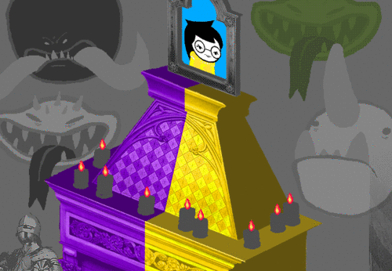

I jokingly said that GC’s pesterlog would have taken me five hours to read but in the end I really think it did. Between her dropping kids’s titles and so much information and generally me having to stop to contemplate the perfection of her exchange with Rose, it really did. And I was so excited to finally meet her. And she was so close to winning my heart in just one conversation. But then what does she do?? Threatens John’s life??? Like wow, I swear the trolls are trying really hard to make me dislike them. I swear CG would be near the top of my favorite trolls’ list (under GA, mind you) if he just bothered saying three simple little words to our Jade Harley— What?? Not those three little words, what are you even thinking. I meant “I am sorry.” Wow, you guys are shipper trash. Anyway….
Back to John and his sudden revelation that shaving cream is flammable! Who would ever have imagined!

I think John has taken his Nanna’s advice of following “the ways of the salamanders” a little too literally. He already has an attention deficit too. He will soon undergo the final transformation~

A big gust of wind conveniently comes along and blows out all the fire.
It is really convenient.

The townspeople rejoice and are more than willing to give you all the credit. You suspect it is probably because they are not all that smart.
Buuuut, I bring to you a more interesting possibility instead of coincidence. What if the salamanders are right. What if…. John “summoned” the Breeze. Like every player has the ability to summon the element of their Land. John with Wind, Rose with Rain, Dave with… probably lava, I dunno. Like John doesn’t know he can do it but he was panicking and unconsciously momentarily awakened his ability or something?? Huh??
|
PM makes John draw his copies of Sburb on a Minitablet. We find out why the drawing was so crappy. He was partying hard with the salamanders.
Not that it matters because you suck at drawing anyway.
It’s okay, John. I would have never been able to even press an instrument on the thing anyway.

| > Your deceased pet. |
We got it the first time, you don’t have to rub it in! It’s a sore subject for the Lalondes.
JASPERSPRITE is nowhere to be found. He always was a little cagey, even when he was alive.
Please, tell me he won’t be like a cat version of Nanna. All cagey, only instead of “HOO HOO HOO” he goes “MEOW MEOW MEOW”. …And although that would be utterly adorable, I DON’T WANT IT. Okay, so… maybe just for a little while…
You bet she is! She brought about the apocalypse to get him back! That’s dedication we’ve got here! She talked to him, wrote poems about him… Yeah, you got the point.
This exile is the most informed about the kids’ background that I’ve met so far?! Well, I haven’t met them yet but you get my drift. Like… they (she, I’d guess) even knew about the true reason Rose agreed to play?! Got my eyes on you, ma'am. …I will keep them on you after I get to see you, at least.

Someone is pestering you. But you are oblivious to the message because your laptop is buried under three inches of fucking yarn.
Rose, please, reply before he composes a rap about whispering cats and flying wizards. The boy gets horribly creative when you ignore him for too long.
There are footprints in the white sand.
Well, sprites don’t have legs. It’s probably MOM or a consort.
The mausoleum was destroyed by the explosion. The secret passage remains.
You have no idea where it leads, but it sure isn’t the lab anymore.
Oh, YEAH. We didn’t bring the Lab with us. A shame. I’m still thinking about that eight players session, by the way.

Rose’s gate is pink! Although I’m not sure where it would bring her?! John got downward into his land. But Rose is already in hers. She cannot “descend”. Unless we want to go diving! WHAT IF THE CONSORTS ARE TALKING FISHES. …What? It’s too late. My brain sprouts weird ideas, don’t judge.

It seems someone has recently untied a boat.
OH MY FUCKIN— MOOOOOOOM!!! I will never understand this woman’s thought process. Like “Oh, look. We just got teleported in a new dimension made of rainbows and rain. My daughter has just finished waltzing through fire tornadoes, maybe I should go check on h— hey! Look, a boat! Let’s go sailing instead!”
> A mother will do whatever is best for her children.
THE BEST???? Abandon her?? Leave Rose all alone?? WHO ARE YOU FOURTH EXILE SHOW YOURSELF I WILL FUCKING FIGHT YOU
> WV: Become the mayor of Exile Town.
I swear that behind that democracy and “everyone is equal” facade hides a man who craves power~ Kidding, kidding. But WV has some sort of fixation with being in charge.

You build a bigger and better town to preside over. All expatriates are welcome, no matter what happened in the past, regardless of professional persuasion or metallurgical affiliation.
I WANT TO SEE WV’S BACKSTORY ALREADY! I wanna know why he loves democracy and I wanna know why he hates the king and I wanna know why his description oh him doesn’t fit with Jack Noir’s! Honestly, WV was the first exile introduced but we haven’t seen his pre-exile version yet! I bet that’s because he has big things in store for us! Plot-relevant things! :D
This should catch the eye of the tall nice lady.
Story cuts to PM getting fed up with the both of them and beating them up.
The grumpy yellow guy thinks this is dumb.
The grumpy yellow guy isn’t so childish that he plays major of an imaginary town, WV! He has other things on his mind! That’s why he will get the tall lady before you!

He thinks it is dumb because any town without a proper militia is as good as conquered.
As such he prepares one begrudgingly. It’s a dirty job, but someone must be charged with the defense of the innocent.
……..Never fucking mind. PM will find the other exile and they will live together happily ever after.

The stars twinkle over the freshly christened EXILE TOWN. It is a beautiful evening and the future is so full of promise you can’t imagine what could possibly oh my god a huge eggy looking thing just appeared in the sky.
Fourth Exile: *shows up 1500 pages late with Starbucks* LET’S GET THIS PARTY STARTED
IT JUST TELEPORTED! Okay, now I’m really keeping my eyes on you, fourth exile.
you can’t imagine what could possibly oh my god
WV, learn something. Never, and I said NEVER, say the “you can’t imagine what could possibly go wrong” thing or any variation of it in a work of fiction. It’s a matter of survival.

I love how the exclamation just says “EGG!”. Like, do we need any other word? No, it’s self explanatory and perfect. It’s an egg.
> Jade: Give Dave punch card of an eggy loking thign [sic].
I don’t know what Jade and Dave are doing anymore. And yes, let’s give an egg to Bird Boy.

A BIRD JUST??? LAID??? AN EGG??? AND DISAPPEARED??? Even the game itself is trolling Dave so hard, I swear.
Ok, you do that and then he makes a totem with it and then some other stuff happens and then…
Self-explanatory at its finest. We need no explanation no more. We already got to the enter item?! Wow, that was fast! Well, Rose and Dave did it all in a flash……. I meant very fast, not the flash animation…. Why do I keep accidentally saying things like these…
TG: oh man
TG: awesome
TG: its awesome where you put that
TG: i was worried we were on the verge of getting some shit done
GG: duuurrrrr dave i was going to build some stairs up there durrrrrhhhhhh
TG: well where are they
TG: you say there will be stairs
TG: and yet
TG: i see no stairs
GG: gosh i dont know i guess i didnt find the time to make them because i keep getting punched in the face by robots and stuff!!!!!!!
TG: sorry
GG: ;p
Why build stairs when you could have just put it no the roof itself?! Why are we allowing Dave, the walking SBAHJ meme, to get near stairs ever again.
TG: am i supposed to break that thing
TG: or hatch it
TG: or what
GG: i dont know!
Imagine Dave cautiously sitting on that egg as he asks Jade “am i doing this right” and Jade says “i’ve got just what we need!!” and she starts sending him birds documentary. Billions of them. Dave can’t get her to stop.
TG: also what happened to all my shit
TG: the stuff scattered all over the roof
TG: did you put it somewhere
GG: nope….
TG: i mean not that i care
TG: it was a lot of mostly useless garbage
Meanwhile BRO sheds a single tear…
But seriously dude, there was also Lil'Cal in there, that’s so rude. Your brother would disinherit you if he was in earshot. Too bad he blasted off into the sun.
GG: what was it doing up here?
TG: i was going to use it to fight my bro with
TG: but i guess i forgot in the heat of battle
TG: also he was too fast
He wanted to weaponize his sylladex??? While fighting with Bro????! Flash-stepping master extraordinaire?!

A brainless feathery asshole swoops down and carries the egg away.
WE ARE GONNA END UP CHASING THE BIRD THROUGH ALL THE FREAKING CITY THIS IS HOW WE WILL SPEND THOSE FOUR HOURS I KNEW IT I FREAKING KNEW IT

Or not.
Please direct your gaze to Cal. I swear if you look at it from another angle it’s still freaking staring creepily right into your eyes. Godness. It’s like that pistol-still-aiming-at-you-even-if-you-move post.
TG: ok so
TG: the egg is now in a nest made of shitty swords and soft puppet ass
TG: please advise
GG: i think your sprite wants to hatch it!
GG: awww
TG: do you think thatll take more than four hours
GG: hmm…
GG: i dont know it looks like its pretty warm where you are
TG: its hot as the sizzle side of the steak
Friendly reminder to both Dave and Jade that the whole city is burning down and under a meteor shower.
GG: maybe not too long then????
GG: i guess we’ll find out!
TG: maybe i should try to get it back
TG: and put it in the microwave
GG: :(

Wow, Jade was really worried about the microwave option.

I don’t think Rose and John had all those contraptions available! Also, WHAT’S THAT DISK.
GG: ok some of these things we can deploy but some things we dont have nearly enough grist for!
TG: you mean the jumper block thing
GG: no no weve got enough for that…..
GG: but its still pretty expensive
TG: wait what
TG: the thing costs 1000 for me
GG: yeah me too!
GG: and we have 2000 to work with
GG: ok 1998 ._.
TG: what
TG: man i only got 200 to splash around with in roses rainbow world
TG: what the hell
GG: ohhh…
GG: how much did rose start with? when she was playing with john?
TG: hang on ill ask
GG: k
TG: she says 20
GG: i guess we keep getting more with each server/client connection!
What the heck. No but. What about the trolls?!? THEY ARE TWELVE. Does the last troll to connect get 200 billions?????? WHAT???????
TG: yeah
TG: so i guess you can buy everything now
GG: no!!!!
GG: i cant buy the holopad thingy and the intellibeam laserstation
TG: ok now i know youre making this shit up
GG: hahahaha no theyre right here!
GG: they cost a fortune
TG: well all i got here is the designix which i cant deploy cause i dont have any purples
TG: and the expensive as hell jumper thing and the cheap shunts which i assume do dick all without the jumpers to put em on
TG: oh also this cd which is 100 but i didnt drop cause it seemed like a stiff allocation of resources for now
GG: yeah ive got that too!
GG: i will deploy it
TG: so with each new connection in our player chain i guess new weird deployables are introduced
GG: yes i think that is how it works
GG: when john connects with me he will probably get some cool new things too!
TG: hey look we’re learning stuff
I hadn’t gotten this feeling of “just children playing a game” in a while. It’s weirdly nice. I don’t like how everything is perfectly fine right now?! I don’t know. John is in search of his dad’s car accompanied by festive salamanders. Rose just began exploring her land guided by the fourth exile. Dave and Jade are figuring out new equipment, the meteor is four hours away. The exiles are having a nice dinner and they will soon finally be all together. There are no threats in sight for anyone. I do hope this is not a “calm before the storm” scenario.
TG: what should i do with these beta copies
TG: i dont really need them anymore
GG: i suppose just hang on to them for a while……..
GG: and then later
GG: just do whatever you are naturally compelled to do with them!
TG: wow that was a weird answer
TG: but ok
This is what happens when even our self-appointed seer doesn’t know how the heck those copies ended up in her frog temple.

It was obviously labeled as the JUMPER BLOCK EXTENSION.
It appears to be deployable only as an extension to the ALCHEMITER. Looks like you’re going to have to move it.
Damn, and it looked so nice up there!
Jade Harley, you’re a disgrace. I’m so glad she began screwing up with space management AFTER Rose got confirmed to be the Seer and not before. Otherwise I would be screaming.
Dave: Insert disc into computer.


GRISTTORRENT is now running.
I CANNOT BELIEVE THIS.
> Dave: Illegally pirate some of John’s shale.
That’s not so illegal, I mean… It’s a possibility that the game gives you. A feature. BUT YOU SHOULD ASK JOHN FOR PERMISSION FIRST.
You start leeching off John’s SHALE at a pace of 4 g/s.
Not the fastest download rate, but then again you don’t need a whole lot. In one second you already collect enough for a PUNCH DESIGNIX.
DAMMIT. John, they’re gonna steal from your hard earned sweet loot!!
At least he won’t notice if you download at that velocity.
> Dave: Download a bunch of grist from John. He has plenty.
You set the application to leech off John’s BUILD GRIST because he’s obviously got too much for his own good.
NEVER MIND. Dave is a fucking delinquent and doesn’t even care.
– ectoBiologist [EB] began pestering tentacleTherapist [TT] –
EB: rose?
EB: are you there?
EB: i went through the gate, nanna said you might be here too.
EB: are you in kind of this spooky glowy place with oily rivers and stuff?
EB: let me know ok.
TT: I guess one could use those words to describe it.
TT: If armed with a predilection for the inapt.
I MISSED MISS SASSY QUEEN.
EB: bluh bluh bluuuuuhhhhh.
EB: ok, what words would you use, miss wordypants mcsmartybluh.
I guess you could call her that too.
TT: Eerily iridescent?
EB: umm…
Hold it. He’s searching those words on the dictionary.
TT: I certainly don’t see any oily rivers.
TT: There’s an ocean though.
EB: i haven’t found an ocean yet.
EB: but i dunno, the place is really big.
EB: it’s like a whole planet down here.
John, CG literally TOLD you it was a planet one minute ago, what kind of memory do you have. I swear asleep Jade is better at remembering stuff than you.
EB: oh man, which reminds me.
EB: i just got hounded by a troll.
TT: Yes, one of them is bugging me now.
TT: I thought it was odd timing.
EB: yeah well, they say they want to be friends, also they’re playing sburb but like not the same session as ours or something.
EB: oh also they’re moving backwards in time, which sounds really retarded, but whatever.
Blame it on CG. Not everyone. Seems like he was the one coming up with that wonderful idea.
TT: Color my curiosity piqued, I guess.
EB: yeah, i guess answer him if you want. or not.
WAIT. DOES THIS MEAN. THAT I WILL FINALLY GET. A CG AND ROSE CONVERSATION. OH MY GOD.
EB: but anyway, it’s great you made it here alive and stuff!
EB: so dave came through?
TT: Eventually.
TT: Pardon the envy I’m about to vent in your direction.
EB: for what?
TT: For finding yourself at the mercy of a rational orchestrator.
EB: oh, haha.
It came up that not even Jade is a good server player, so Rose can’t blame herself because she is literally the only kid vaguely competent at this and she can’t have a one player session. Sorry, Rose.
EB: yeah, i’d feel kinda weird if dave was watching me too.
TT: You don’t feel weird when I watch you?
EB: rose i feel weird when you’re just TALKING to me, when you’re watching me it’s just like the weird frosting on the big weirdo cake.
Oh, YEAH. Great going, John. It sounded like she was kind of relieved because she wasn’t weirding you out and you just go “haha, no. you SURE AS HECK do!"
TT: I can’t see you now, for what it’s worth.
EB: yes i’m freeeeeeeeee :D
yes he’s freeeeeeeeee— of ending up IN THE MOUTH OF A GIGANTIC MONSTER AFTER NOT EVEN FIVE MINUTES WITHOUTH SUPERVISION! :D yayyyy!! John won’t survive this. Rose, you don’t need to finish that present for the kid anymore.
EB: ok, i’m going to go over this river and through these woods.
EB: you talk to your troll i guess.
EB: we’ll compare notes later.
TT: Ok.
TT: Bye, John.
BUT MEANWHILE. ROSE AND CG. NOW. WERE MAKING THIS HAPEN.

Ooooh noooooo. CG is a Cancer. John, how dare you getting my hopes up.
– gallowsCalibrator [GC] began trolling tentacleTherapist [TT] –
But it’s GC! And they’re a Libra! But I think I will wait until I actually meet the trolls before confronting the characters to their signs.
GC: H3Y L4LOND3
GC: STOP CRY1NG 1N YOUR MOMS B3V3R4G3
GC: SH3 H4T3S YOU 4ND H4S L3FT YOU FOR3V3R
GC: H3H3H3H >8D
WOW, FUCK YOU TOO?!?!?? LEET SPEAK. PLEASE LET ME DIE INSTEAD. I hate leet speak and plus I take five hours to read it! It gives me headache!
TT: Now I’m confused.
TT: On the surface, this appears to be another contrivance from a troll desperate to offend.
TT: But John said you wanted to be friends.
TT: And if you knew me, I suppose your remark could be construed as a ploy to elicit agreement.
TT: And soon, rapport.
TT: Not that it would actually work.
Rose, what are you even saying. They just told you your mother hates you! You think they wanna be friend?!?!? But actually, I don’t think the trolls have this friendship thing really nailed down.
GC: GOD
GC: YOU R34LLY DO T4LK TOO MUCH
This is you guys when you read my posts.
TT: So which is it?
GC: OOOOOOOOOH
GC: YOUR T3XT SM3LLS GOOD
GC: 1S TH4T L4V3ND3R
Rose wants, as always, to get to the point. GC suspiciously and swiftly veers off. Mmmmhhhh. Mmmmhhhh.
TT: You smell words?
GC: YOU DONT???
TT: Right. Aliens, I forgot.
Right. Aliens. I look forward to many, many more cultural misunderstanding.
GC: Y3S 1TS 34SY TO FORG3T
GC: G1V3N OUR "R4PPORT"
GC: 4ND HOW MUCH W3 R34LLY H4V3 1N COMMON
GC: 1 FORG3T TH4T YOU HUM4NS 4CTU4LLY COMMUN1C4T3 W1TH SP33CH 1NST34D OF R3L34SING CLOUDS OF FR4GR4NT G4S3S
GC: 4ND SM3LL1NG 3ACH OTH3RS S3NT3NC3S
TT: Gross.
Forgive me if I quote Dave Strider but "ok now i know youre making this shit up ”
GC: 4H4H4H4 SO GULL1BL3
GC: YOULL B3L13V3 4NYTH1NG 1 T3LL YOU
GC: OF COURS3 W3 T4LK DUMMY >8]
TT: Still not sure if I’m being courted or trolled here.
Rose you’re becoming victim of the Dave Strider’s Syndrome! In which you think everyone and everything is flirting with you! I think that’s just their way of doing this, Rose. Like CG with screaming and insults.
GC: 1M GO1NG TO GO W1TH TH3 LATT3R
GC: 1 H4T3 YOU 4LL QU1T3 4 LOT
GC: BUT 1 TH1NK
GC: TH3 OTH3RS W1LL 3V3NTU4LLY R34L1Z3 TH4T 1TLL B3 MUTU4LLY B3N3F1C14L FOR US 4LL TO WORK TOG3TH3R
GC: 4ND SO TH3YLL PROB4BLY B3 4LL FR13NDLY L1KE L4T3R ON
TT: By later on, you mean now?
GC: Y34H
GC: TH4TS PROB4BLY WH4T JOHN W4S H34RING
GC: 4ND M4YBE TH3YLL 3V3N M34N 1T 4ND W4NT TO B3 FR13NDLY
GC: BUT 1 1NT3ND TO ST4Y P1SS3D 4T YOU FOR3V3R
GC: 3V3N 1F 1 S33M H3LPFUL
That sure earns you trust points, GC! Yes, keep on that rout! Perfect! And here is another that knows his name! When did John get so popular? He’s like the new Jade Harley in the trolls’s circles!
TT: Then you’re in luck.
TT: Because you don’t.
GC: H3H3 NO BUT 1 W1LL BE
GC: TH3 F4CT TH4T 1 W1LL B3 H3LPFUL
GC: 1S 4N 1MMUT4BL3 F4CT 1 4M ST4T1NG FOR TH3 R3CORD
GC: 1T DO3S NOT M34N FR13NDSH1P 1S WH4T 1S T4K1NG PL4C3 H3R3
CG: THE FACT THAT YOU ARE DUMB
CG: IS AN IMMUTABLE FACT I AM STATING FOR THE RECORD.
CG: IT DOES NOT MEAN ANIMOSITY IS WHAT IS TAKING PLACE HERE.
Oh, NO. Now even the trolls are starting to reference each other. Forget John, I am the one who won’t survive this.
TT: John was told you were moving backwards through time.
TT: Was he gullible to believe this?
TT: Or is the fact that I’m asking just further indication of my own gullibility?
TT: Feel free to continue shifting the definition of the word to suit your convenience.
GC: W3 H4V3NT 3V3N B33N T4LK1NG TO YOU FOR LONG
GC: L1K3 4 F3W M1NUT3S FROM MY P3RSP3CT1V3
GC: 1F TH3R3 4R3 SOM3 OF US WHO D3C1D3D TO ST4RT T4LK1NG TO YOU 4T TH3 3ND OF YOUR 4DV3NTUR3 R1GHT OFF TH3 B4T
GC: 1NST34D OF 4T THE B3G1NN1NG L1K3 WH4TS LOG1C4L
GC: TH3N TH4TS TH31R STUP1D BUS1NESS
Ohhhhhh, CG! This one is calling you stupid!
GC: 1M ST4Y1NG L1N34R
GC: C4US3 W31RD T1M3 STUFF G1V3S ME A H34D4CHE
GC: OH 4LSO 1TS PO1NTL3SS
Here we’ve got someone who is not a Time player. I sincerely hope CG is not the time player of their session! Otherwise they’re pretty doomed!
TT: Alright, let’s continue milking my human gullibility and say I believe you. You’re the sensible one who’s decided to communicate with us in linear lockstep with our timeline in order to help us out.
TT: How can you help me?
GC: YOU JUST 3NT3R3D YOUR M3D1UM R1GHT
TT: Yes.
GC: OK
GC: DO3S 1T S33M L1K3 TH3R3 1S A SUBTL3 VO1C3 1N YOUR H34D URG1NG YOU TO DO TH1NGS
TT: Yes.
TT: It’s not so subtle, actually.
GC: Y3S!!!!!!! >8O
GC: FOR M3 TOO 1T W4S MOR3 LOUD 4ND CL34R TH4N FOR TH3 OTH3RS
GC: YOU S33 W3 4R3 M34NT TO B3 B3ST H4T3FR13NDS FOR3V3R
TT: A beautiful soulgrudge this cosmic was surely authored by the constellations.
Yes, serendipity at its finest. You guys, stop the passive aggressive flirting. PLEASE.
GC: TH3Y 4LL THOUGHT 1 W4S CR4ZY
OH MY GOD. I can already imagine the scene. Like GC is shocked and appalled that nobody else seems to remember or even be aware of the voices and one time they decide to gather all the other trolls together to discuss it. And they begin talking like “R1GHT SO YOU R3M3MB3R 4BOUT THOS3 VO1CES 1N OUR H34DS 1 W4S T4LK1NG 4BOUT” and everyone just sighs and throws worried glances at each other and CG goes all “NOT THIS SHIT AGAIN” while GA tries to be reasonable about it like “We Have All Been Through Some Arduous Times Lately But We Think You Really Need To Relax Before This Degenerates, GC.” and they all approach GC slowly and menacingly and GC panics and goes “W41T GUYS 1’M NOT CR4ZY” “WE DIDN’T SAY THAT. YOU ONLY NEED SOME REST.” “OH MY GOD, 1 C4N’T B3L13V3 TH1S” “uH, nOBODY HAS BEEN HEARING VOICES, iT WAS ALWAYS ONLY YOU ” “This Is Only For Your Own Good.” and they loom over CG to put them to sleep as GC screams “DON’T YOU D4R3 TOUCH M33333” “SHHH ONLY DREAMS NOW"—
………………….Please, someone stop me. Why do I keep doing this. Inventing scenarios. This is the plague of a fanfiction writer. I only post like the 30% of the things I come up with. Please, help. Oh, but I know why this is happening. I know. Because I like them. I like them all so far. Yes, even CG. Me liking CG is a fact. And the others too. The ones with one conversation. Them too. AT had me as they said "oK, THIS IS SORT OF STARTING TO UPSET ME, and wHO’S CHARLIE, and GA had me as she made an attempt at human sarcasm but Suddenly I Feel More Primitive And Hate Myself A Little More and shyly asked Rose Why Dont We Be Friends . Me liking the trolls is a thing that is happening and I cannot deny. And I hope I like the others too. ç.ç
GC: BUT H4H4H4 1T TURN3D OUT W3 4LL W3R3 1N OUR OWN W4YS
WHAT DOES THIS EVEN MEAN I DON’T KNOW WHY BUT I AM LAUGHING SO HARD I WANT TO MEET THEM ALL CRAZY OR OTHERWISE
GC: TH4T H3LP3D US R34LIZ3 TH3 P4RTICUL4R D3ST1N13S THE G4M3 PUT TOG3TH3R FOR US
GC: 1N TH3 VOC4BUL4RY OF L1K3
GC: TH3 HYP3R FL3XIBL3 MYTHOLOGY 1T T41LORS TO 34CH PL4Y3R GROUP
Yeah, yeah. Every session is different because its players are different and the game is self-aware and adapt itself to the kids’ decisions. Most evident example: the prototyping process. They get to choose their enemies.
TT: You mean, for instance…
TT: If a player were to learn she was a "Seer”?
Breaking News: Rose IS aware of the fact that she is/will be a Seer.
GC: Y34H 3X4CTLY! S33R OF M1ND P4G3 OF BR34TH KN1GHT OF BLOOD M41D OF T1M3
GC: 3TC 3TC 3TC
WHOA WOAH WHOA IT’S RAINING KIDS’ ROLES. CALM THE FUCK DOWN DON’T DROP TITLES LIKE THAT.
Seer of Mind??!!!! That’s pretty freaking cool??!! And what do they do???!! Important question: can seers be males?? and can knights be females?? Seer of Mind. Like they can predict… Well, mind is pretty vague, it could mean tons of things but please consider the coolest possibility: Mind as intentions, opinions and decisions. And predicting others’ intentions is a pretty fucking powerful ability to have. If you know how to use it well, of course.
Page of Breath!!!!!!!!!!!!!!!!!!!! Should be a boy. Here is another with the Breath element! You all know what this mean?? That when I get to know this one troll I WILL CONFRONT HIM. WITH JOHN. SEARCHING FOR PATTERNS. B) ….Whatever it is that Breath Players do.
Knight of Blood??! That’s harsh! Out and seeking for grudges?? Are they violent or something?? Considering the Knight nature as loyal and a protector though, (Dave strikes me as a pretty loyal friend after all, Even if he tries to hide the fact that he cares for whatever reason. *cough* It’s BRO’s fault *cough* ) it could mean blood as family. As relationships. Aww, someone who wants to protect their loved onessss…. Well, opposite theories are opposite. Which one is it?
Maid of………………….JESUS CHRIST THIS IS THE MOST AWFUL PUN IN HISTORY. I REFUSE. TO SPECULATE. ON A PUN. ……Okay, I will do it. Well, Maid. (well-made why does anything regarding time players sound like a freaking pun) This one is a girl. This is interesting because what if the pun is more than just that. Like they are meant to representate the essense of the element. Like… the girl is LITERALLY TIME. She is Time and Time is her. You need some time, there she is. What?! I don’t know what I’m saying anymore. I only know that this is one cool title.
GC: TH31R ROL3 1S TO H3LP YOU ON YOUR QU3ST 1N SOM3 W4YS
GC: TH3 OBV1OUS W4Y 1S BY D1R3CTLY GU1DING YOUR 4CT1ONS
GC: BUT M4YB3 TH3 MOR3 1MPORT4NT W4YS 4R3 TH3S3 L1TTL3 TH1NGS TH3Y DO PROB4BLY W1THOUT 3V3N R34L1Z1NG 1T
GC: 4CT1ONS TH4T COMPL3T3 LOOPS 1N TH3 T1M3L1NE
Like how PM is delivering John’s copies to him?? Jade is helping all of the exiles to create loops though.
TT: And this voice?
GC: OH Y34H
GC: 1TS 4N 3X1L3
TT: Exiled from what?
GC: 1T TOOK US FOR3V3R TO F1GUR3 TH1S OUT
GC: B3C4US3 TH3Y 4R3NT M34NT TO B3 4N OBV1OUS 4SP3CT OF TH3 G4M3
GC: TH3YR3 ON YOUR D34D PLAN3T
GC: JUST L1K3 TH3YR3 ON OURS
GC: Y34RS 4FT3R 1TS R3CKON1NG
Oooooh, so the exiles will be… well, exiled right after the Earth has officially met its end. Good to know.
GC: COGS 1N P4R4DOX SP4C3
TT: Paradox space?
GC: OH H3LL
GC: L1ST3N TH3 UN1V3RS3 W1LL 34T P4R4DOX3S FOR BR34KF4ST
GC: 4ND SO W1LL TH1S G4M3
GC: G3T US3D TO 1T
I kind of noticed when Grandpa showed up alive on John’s Land when he was still very dead in Jade’s grand-foyer and when Jade ran Dave’s copies of Sburb on her computer as Dave stored them securely in his Sylladex. But thanks for the info, GC.
GC: BY NOW YOU SHOULD R34L1Z3 TH1S WHOL3 M3SS W4S 4 B1G S3LF FULLF1LL1NG CLUST3RFUCK
GC: A HUG3 ORG14ST1C MOB1US DOUBL3 R34CH4ROUND
I dont’t know why, I never know why I find something hilarious. But this made me laugh for two minutes straight and gasp for breath. It’s definitely the fact that I read pesterlogs aloud though. You should try it. AND WHAT DOES THIS EVEN MEAN, GC. I SWEAR TO GOD, ARE YOU JUST FUCKING WITH US.
TT: I’m starting to see that.
TT: So the exiles are on Earth? Does that mean our goal is to get back there too? To resurrect it somehow?
GC: NO NO NO
GC: S33 1RON1C4LLY TH3Y G3T TO DO TH4T
1RON1C4LLY
I swear I just got a terrifying flashback to the times in which Dave would say the word irony or one of its derivatives every three words or so. I’m not even kidding.
GC: 4FT3R TH3YR3 DON3 H3LP1NG YOU TH4T 1S
GC: YOUR JOB 1S OF GR34T3R CONS3QU3NC3 TO S4Y TH3 L34ST
GC: BUT P4RT OF TH31R JOB 1S TO R3BU1LD L1F3 4ND C1V1L1Z4T1ON TH3R3
GC: 4ND 1F TH3YR3 SUCC3SSFUL 1N THOUS4NDS OR M1LL1ONS OF Y34RS TH3 T3CHNOLOGY 1S UN34RTH3D 4ND TH3 PL4N3T 1S R1P3 FOR S33D1NG 4LL OV3R 4G41N
It sure is a shame that civilization on our planet won’t ever be rebuilt because AR and WV will duel to death over our lovely parcel mistress.
TT: You never answered the question. Where were they exiled from?
GC: FROM TH3 TWO K1NGDOMS 1N TH3 1NC1P1SPH3R3
GC: 3XP4TR14T3D DUR1NG TH3 R3CKON1NG
GC: FORM3R 4G3NTS
TT: What are agents?
GC: 1 TH1NK
GC: TH1S W1LL B3 MOR3 CONSTRUCT1V3
GC: 1F 1 CONT4CT YOU 4G41N 1N 4 L1TTL3 WH1L3
GC: WH3N YOU KNOW MOR3
GC: 4ND 1 DONT H4V3 TO 3XPL41N SO MUCH
TT: When?
GC: 1N 4 COUPL3 OF S3CONDS
GC: FOR M3
GC: BUT NOT FOR YOU
GC: SUCK3R
– gallowsCalibrator [GC] ceased trolling tentacleTherapist [TT] –
OH MY GOD. JESUS. This one troll. They irradiate badassness. It pours through those very turquoise words. Shower me with Rose and GC interactions. BURY ME UNDER ROSE AND GC’S INTERACTIONS. DO IT.
They are also the only one even capable to troll so far. We got a troll that knows very well their way with trolling. But on our side you know who we have? An human who knows very well their way with trolling. Majestically well. He’s known as the human who got blocked by a troll. The human who draws comics and then purposefully sets their quality to low. The human whose name is Dave Strider. GC versus DAVE. PESTERLOG. MAKE IT HAPPEN. NOW.
Meanwhile, the past pulls a mean double reacharound…
I STILL DON’T KNOW WHAT THE HECK THIS MEANS.


Please do NOT put John and Jade in the exact same position in the same page ever again as if I haven’t got enough crack theories already that haircut can’t be a coincidence it must be hereditary I swear Grandpa was made bald only so you couldn’t make the connection with John please stop this are they cousins tell me now
ghostyTrickster [GT] began pestering gardenGnostic [GG]
GT: hey, happy birthday jade!
GG: yay thank you john!!!!! :D
We already saw this conversation and………..
GG: john thats ok really! im sure will get to me exactly when it needs to and it will be a nice surprise when it does!
GT: ok well i hope so.
GG: <3……
GG: uhhhh hold on
It got interrupted by a troll!
carcinoGeneticist [CG] began trolling gardenGnostic [GG]
OH FUCKING— THIS FUCKER. JUST GOT TO A PREVIOUS POINT TO BOTHER JADE! AAAAAUUUGHHH!
CG: WAIT GOD DAMMIT DON’T BLOCK ME.
HE SOUNDS SO DESPERATE I LOVE IT
CG: I MEAN NOT THAT BLOCKING ME WOULD DO ANYTHING.
CG: BUT JUST LISTEN.
GG: what do you want?????
CG: I JUST HAVE TO DELIVER A MESSAGE AND THEN I’LL GO.
CG: IT IS A MESSAGE FROM YOU, SO YOU PROBABLY OUGHT TO LISTEN.
This makes no effing sense—
GG: this is nonsense
Thanks, Jade. But why would Future Jade trust YOU with a message to her Past Self when she KNOWS she hated your guts. C'mon.
GG: every time i believe something you say you laugh at me and call me a gullible human!!!!
Jade, you don’t even know the half of it, we just ended a conversation with GC and between them and Rose they said the word gullible every three words, it was like a mystical experience. Like the only insult in their vocabulary, I swear.
GG: its so childish
Okay, but the thing about Jade Harley is that she doesn’t look like it but I swear she is the most mature. And she will call you out on your bullshit. If you cross the line she will do it. It doesn’t matter if you are her friend Dave that has been ranting about having to pee for three minutes straight or a troll full of himself who acts like a five years old child. She will do it. And it’s majestic.
CG: OK FINE I ADMIT IT, I COMPLETELY SHIT THE BED HERE.
CG: I GET THAT.
CG: AND I CAN’T PROMISE I WON’T KEEP TROLLING YOU.
CG: CAUSE I WILL, IN WEEKS OR MONTHS OR WHATEVER.
CG: I’LL KEEP GIVING YOU A HARD TIME, BUT SEE THAT WON’T BE PRESENT ME.
CG: THAT’S PAST ME.
……………
……………………IS THIS GUY FUCKING SERIOUS?!
CG: FROM LIKE A HALF HOUR AGO OR SO, WHEN I WAS MORE HOT AND BOTHERED ABOUT ALL THIS, OK?
Yeah. He’s changed now. He’s undergone this amazing tranformation and has left puberty to become this totally mature and strapping young man. Can’t you see that? He’s a whole new person now. WHOA, LIKE GUYS… THAT WAS HALF AN HOUR AGO, CAN’T YOU SEE HOW MUCH HE HAS MATURED NOW?! Besides… I still don’t see any apology, CG ;)
GG: D:
GG: i dont know what youre talking about at all…..
GG: its another prank
CG: WHATEVER, FINE, THINK IT’S A PRANK.
CG: AS LONG AS YOU REMEMBER THIS CONVERSATION.
CG: SEE WE’RE TRYING TO TALK TO YOU IN THE FUTURE, AND IT’S IMPORTANT, BUT YOU WON’T ANSWER US.
CG: SO WE TALKED TO YOU WAAAY IN THE FUTURE TO ASK HOW TO GET IN TOUCH WITH NOT-SO-FUTURE YOU.
CG: ARE YOU FOLLOWING?
Ehhhhh…….
GG: no
pLEASE APPRECIATE THE WONDERFUL BEING THAT IS JADE HARLEY. Also CG, I doubt you’ve informed the Maid of Time of this ridiculous system you’re using to communicate. She would be so disappointed.
CG: SHE SAID TO TALK TO YOU NOW AND TELL YOU THIS.
CG: YOU KNOW YOUR ROBOT?
GG: you mean the robot you think is stupid?
GG: the one youve mocked me for having on a number of occasions???
CG: YEAH, WELL I STILL DO THINK YOUR ROBOT IS STUPID.
CG: BUT THAT’S BESIDES THE POINT.
CG: LATER ON IT WILL BLOW UP FOR SOME REASON. IT DOESN’T MATTER WHY.
OH JESUS CHRIST IT MATTERS!!!!!!!!!!!!! IT HELLA MATTERS!!!!!!!!!!!!!! BECAUSE THE DREAMBOT MIMICS JADE’S EVERY MOVE!!!!!!!!!! BECAUSE THERE WAS THAT HORRIBLE JADE’S DEATH FORESHADOWING BEFORE!!!!!!!!!!!! BUT IT THANKFULLY TURNED UP NOT TO BE WHAT I THOUGHT!!!!!!!!!!!!!!!!! BECAUSE NOW I SEE THE LIGHT!!!!!!!!!!!! BROUGHT BY A DUMB ANGRY GUY!!!!!!!!!!!!! BECAUSE JADE!!!!!!!!!

WON’T DIE!!!!!!!!!!!!! But her clone on Prospit sure will, damn. This is a goddamn shrine. Made by Grandpa. Grandpa who already knows that his kid will die. Or at least experience death. And that’s why her ashes are not there to complete the picture. Because it’s not the real Jade dying (or blowing up I guess) but just the one on Prospit. I’ve been worried about this for five decades. So I’m not even sad about this. Because I thought it was Jade's— THE REAL ONE — death foreshadowing and I’m relieved. Plus it was necessary. In the name of character development. But I’ve already talked so much about this. And it looks like the only consequence will be a terribly upset Jade because she can’t be a seer anymore. But that is a thing that we already knew would have happened. And so Jade will have to say goodbye to her cute golden kingdom, to flying around on Prospit, and to chatting with the friendly locals who have kept her company since she was little and alone— OH, WOW. AND NOW I’M SAD. GREAT GOING, ME.
GG: this is the worst prank youve ever pulled!!!!!!
CG: QUIET.
CG: ANYWAY, WHEN IT HAPPENS YOU WON’T KNOW WHAT TO DO.
CG: THE THING TO DO IS TO CONTACT US.
CG: AND WE’LL TELL YOU WHAT TO DO.
GG: why should i do that?
CG: BECAUSE THAT’S WHAT YOU TOLD US TO TELL YOU.
CG: WHATEVER, BELIEVE ME, DON’T BELIEVE ME, I DID MY JOB.
CG: I’M OUT OF HERE.
But our Jade is a resourceful girl. Her waaay in the future self seems to be fine and dandy. She’s still making stable loops. Only she’s using the trolls now. Well, future now. And waaay less in the future Jade will receive instruction from the trolls and will know what to do. There, everything is fine. WAIT. DID CG SHUT JADE UP. HE DID! HE SAID “QUIET”. OH. MY. GOD. YOU DID IT, CG. YOU JUST DID IT! YOU ARE NOW AT THE BOTTOM OF MY FROM MOST TO LEAST LIKED TROLLS’ LIST. ….Again.

THERE HE IS. THERE HE FUCKING IS. WHERE IS MY INTRODUCTION I DON’T SEE ANY GIVE ME THE INTRODUCTION WHERE IS IT???!!!!??

Oh. It’s Jade. Again. Is this in the past, future, the timeless expanse of The Medium WHEN DOES THIS EVEN HAPPEN. WHAT ARE WE WATCHING.
The package from your pen-pal appears again. You’ve been wondering when it was going to show up. It has been months since you last worked on it!
Hopefully your friend has made the final modifications you require. You’ll have to mail it soon so it reaches John in time!
Her friend??!! Pen-pal?????????? JADE. Okay but is she talking about one of the exiles…… I don’t know. She did refer to them as friends before. And yeah, they have a sendificator. And Jade sends letters to the exiles. It should be the fourth one. For a moment I thought it could be a member of the magical and mysterious eight players session. But I’m beginning to think what I saw in the Skaia Net laboratoy was really just a vision or something. WHEN WILL THEY EVEN START TO GET MENTIONED.

– gallowsCalibrator [GC] began trolling ghostyTrickster [GT] –
OOOOhhhh, It’s GC! Again! Look, everyone is happy when talking to GC, even Rose was smiling!
GC: H3H3
GT: uuuuugh
GC: H4H4H
GC: H3H3H3H3
GT: ?
GC: LOL!
GC: H3H3H3H3H3H3H3
GC: >:]
John doesn’t seem happy to hear from them, though. And GC is just… laughing. A lot.
GT: well
GT: i guess you’re not too bad a troll if this is all you do.
GT: just laughing and stuff.
It’s their first conversation!
GC: H33H33H33!!!!
GC: H4H4H4H4
GT: hehe
GC: 4H4H4H44H4H4H4H4H4H4H4H4H4
GT: hehehehehehe
Incredible. Such affinity. What a complex and interesting dynamic that this pesterlog presents us. Serendipity strikes again.
GC: JOHN
GC: WHY WOULD YOU L4UGH 4T 4 BL1ND G1RL
GT: uh…
GC: YOU H4V3 NO 1D34 HOW MUCH YOU D1SGUST M3
GC: YOUR3 4 TOT4L D1SGR4C3 TO TH3 F13LD OF 3CTOB1OLOGY
GC: 1F W3 3V3R M33T
GC: 1M GO1NG TO CUT YOUR THRO4T
GC: 4ND L1ST3N TO YOU BL33D WH1L3 1 SM3LL YOU D13
– gallowsCalibrator [GC] ceased trolling ghostyTrickster [GT] –
???? WHAT THE ACTUAL FUCK ????? WHAT THE HELL ????? WHAT THE FUCK ???? WHERE DID THIS EVER COME FROM ????
And GC is a girl. Wow, I don’t care if she is trolling him, exaggerating, pranking, that was exceptionally disturbing. And so there she goes, on the bottom of my trolls’ list, outranking even CG. And to think she started off so well. Just under GA. I’m so disappointed. Also I don’t know if I believe her when she says she is blind. How is she writing and reading?? She could be using a speech-to-text function but I don’t think that works with leet speak. The thing going for her is that she never mentioned seeing, only hearing and smelling.

SHE MADE JOHN UPSET. THE DEED IS DONE. THE TROLL NOW HAS SO MUCH REDEEMING TO DO. SO MUCH.
You think it’s time to change your chumhandle.
Well, after people start making threats on your life, that may as well be the case.
WAIT. No….. I can’t believe this………..
YOUR3 4 TOT4L D1SGR4C3 TO TH3 F13LD OF 3CTOB1OLOGY
3CTOB1OLOGY
I CAN’T BELIEVE THIS.
To what, though…
John, don’t do it.
Gotta be something they’ll never suspect. What was that thing she said you were a disgrace to?
OH MY GOD
JOHN, YOU’RE A DISGRACE IN ALL FIELDS!!!!!!!!! SCREW ECTOBIOLOGY!!!!!!!!!!! ALL FIELDS!!!!!!!!
Well, in some ridiculous way they would never suspect it. They would ever suspect that John would have been so stupid as to change his chumhandle to something a troll had just mentioned. So John would have been in the clear if the trolls hadn’t had access to “ENTIRE CONTINUUM OF YOUR EXISTENCE”.

OH MY GOD OH MY GOD OH MY GOD TROLLS INTRODUCTION NEARING AAAHHHHH
This one is… sharp. Sharp teeth, sharp shades, sharp horns. All sharp edges, this girl. And her hair is pretty neat compared to the abomination that is CG’s. I think he chops it off with a lawnmower when it gets too long or something.
Now he is an agent?!! I thought AR was simply an inhabitant of the Dark Kingdom??

You have followed the AUTHORITY REGULATOR into enemy territory. It is a risky move and this dark palace makes you very uncomfortable. But it is imperative you press on and recover that parcel.
You have brought along a PARKING CITATION. If confronted, you will say you are only here to deliver payment and leave.
Clever. And she is so determined and brave. I blame Jade if something happens to PM. And yeah, we unraveled the mystery of how everyone is moving from kingdoms to planets. Transportalizers!

It’s Diamond Droog! Well, his alternate self or whatever. Ahhh, I missed him. And he is wearing cat ears on his head OH MY GOD. It’s because Rose prototyped Jaspers! Jack will be positively fuming. More than usual anyway.

You take a turn somewhere and find an especially regal looking red carpet. You wonder where it could possibly lead.
Ehhhh, I’ not sure following it might be the best course of action, PM. Let’s not draw attention.

OOOOH, FUCK. Too late! Oh, fuck. They are sitting on a throne I think. There is a red carpet. Is that the king or the queen…?

THE QUEEN. She doesn’t look very nice…. And missing arm, scarred eye. Like the harlequin John prototyped. And now tentacles, courtesy of our Rose Lalonde.


OH GOD. PM, you can always say you wanted to bring that parking citation, remember! Don’t lose your nerve! You are only facing the monarch of the kingdom that has declared war to youRS OH MY GOD RUN PLEASE RUN.

The BLACK QUEEN directs you to the office of the ARCHAGENT. He is in charge of most of the tedious paperwork around here.
That ring is probably important. It has three spheric thingies… Mmmhhh. (Or maybe four, but I checked in the other panel in which you could see it and it still showed only three.) ALSO ALL HAIL THE QUEEN. As Jack Noir lamented, she is a wise and just leader. I don’t want PM to meet Jack though. Absolutely not. ALSO JACK NOIR IS IN CHARGE OF THE PAPERWORK I’M GONNA CRY THAT IS THE ROLE OUR BIG SHOT HAS. I wonder if she was the one who assigned him the role. It reminds me starkly of Slick and Snowman. He probably hates her guts but can’t touch her because she is the universe/the queen of the kingdom. Poor guys. It’s their destiny. Being under the jurisdiction of powerful and badass ladies. Like… Jack probably has that “you are here forever” sign in his office that the Queen attached herself and Jack put photos of her all around it and uses the thing for target practice.
Who is leaving Rose alone and why would you do tha— Oh, wait. Fourth exile. Right.
This is the last you will hear from me.
Wow. Ominous much?? Where are they going??

Hey, that’s true! Where the heck did Jaspers go?? Did MOM kidnap him or something??

You return to a more typical mindset. You suddenly feel empowered to make important decisions on your own without supervision. Parental or otherwise.
As if she considered her mother an authority to respect before.
| > Rose: Sip martini thoughtfully. |
ROSE. I understand wanting to experience new things. BUT WHAT IF YOU ARE A LIGHTWEIGHT.

Such as this one.
Just a tiny sip couldn’t hurt…
ROSE IF YOU WERE JUST A LITTLE MORE GENDER-SAVY YOU WOULDN’T SAY THAT.
……Cue to Rose passed out on the ground. The other kids just got on her planet because she wasn’t answering any message. They stand in circle around her. John crosses his arms on his chest as he surveyes the situation. Dave looks unfazed but he hides guilty eyes under his shades. Jade is looking around and pouting because this is her first time on Rose’s planet and wow why is it so pretty and colorful Jade’s planet is so lame in comparision and the golden clouds remind her of Skaia and this is so unfair. John and Dave start arguing. “you were supposed to keep an eye on her!!” “dude i stopped looking at her for one second while trying to hatch my egg” “…what?” “its a long story”. But Jade shuts them up. She has an idea. Dave groans as he watches Jade slap Rose repeatedly across the face. Rose comes through. She squints at John, idly pointing at him. “I was in a very purple place. Your father was there. Also weird black creatures dressed up as harlequins cats.” John purses his lips and looks at the ocean, a solemn expression on his face. “it is too late. she is gone now.” “john you do know that she only needs time to sober u—"IT IS TOO LATE, JADE. IT IS TOO LATE."
…This is why I don’t liveblog at 2AM. This is way you don’t want me to liveblog at 2AM. And this is why I am stopping now.
|
Will Rose follow her mother’s footsteps and get drunk?? Will she refuse the calling of the alcool?? As they say, better sober than sorry. No, wait. I just invented that. Yeah, nevermind. See ya in the next post!!